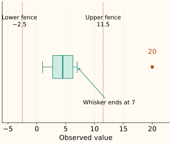

IQR Method
The interquartile range, or IQR, measures the spread of the middle part of a distribution. An IQR rule uses that spread to mark unusually low or high values. It does not let the largest value directly determine the spread in the way a standard deviation does.
A fence is a review cutoff, not proof of a bad row. The rule is useful for a quick single-column check, provided you specify the quartiles, understand the distribution, and keep fitting separate from future scoring.
Find the two quartiles first
Let $Q_1$ be the 25th percentile and $Q_3$ the 75th percentile of the reference values. Their difference is the interquartile range:
Use the sorted reference [1, 2, 3, 4, 5, 6, 7, 20]. With NumPy’s method="linear" convention, $Q_1=2.75$ and $Q_3=6.25$, so IQR = 3.5. These quartiles need not themselves be observed values.
Where did 2.75 and 6.25 come from?
For $n$ sorted values and a requested fraction $p$, the linear convention uses the zero-based position $h=(n-1)p$. If this falls between entries, interpolate between them.
For $p=0.25$, $h=7\times0.25=1.75$: start at the second value, 2, then move 75% of the way toward 3, giving 2.75. For $p=0.75$, $h=5.25$: move 25% of the way from 6 to 7, giving 6.25.
A median-of-halves convention gives 2.5 and 6.5 on the same data. Neither result should be silently substituted for the other when reproducing a cutoff. NumPy documents its available quantile methods.
Extend the central spread to make fences
Choose a nonnegative multiplier $k$. Let $L$ and $U$ be the lower and upper fences. The common choice $k=1.5$ extends each quartile by one and a half IQRs:
Here $L=2.75-1.5\times3.5=-2.5$ and $U=6.25+1.5\times3.5=11.5$. Flag values strictly below $L$ or above $U$. A value exactly on a fence is unflagged under this convention; 20 is above the upper fence.

The multiplier controls how far the review region extends. It is not an estimated percentage of faulty data. Increasing it widens the interval and can only remove flags when the reference quartiles stay fixed.
Move the fences, not the observations
What makes the IQR more resistant to extremes?
Replace 20 in our reference with 20,000. The values used to interpolate the quartiles are still 2, 3, 6 and 7, so the IQR and fences stay unchanged. The extreme observation does not expand its own fence in this example.
This is not immunity to contamination. Enough changed observations can move the quartiles, and small or highly discrete samples can give unstable cutoffs. If the two quartiles are equal, IQR is zero; this can happen when many reference values are tied. The resulting fences still exist, but collapse to a single value and flag every different value. Decide whether that is meaningful for the feature.
On a skewed distribution, a symmetric extension around the quartiles can flag many valid tail observations. An IQR rule makes no promise about a fixed false-alarm rate on arbitrary distributions. Use the shape diagnostics and context before deciding on treatment.
Small convention differences can change a label
The alternative median-of-halves quartiles, 2.5 and 6.5, give fences [−3.5, 12.5] at $k=1.5$. A future value of 12 is flagged by our linear-quantile upper fence of 11.5 and unflagged by the alternative upper fence of 12.5.
This disagreement comes from a defined numerical convention, not randomness. Record the quantile method, multiplier, feature units and reference population when saving the rule.
Fit fences once, then score future values
Run the reference and future-value example
import numpy as np
train = np.array([1., 2., 3., 4., 5., 6., 7., 20.])
q1, q3 = np.quantile(train, [0.25, 0.75], method="linear")
iqr = q3 - q1
lower, upper = q1 - 1.5 * iqr, q3 + 1.5 * iqr
future = np.array([7., 11.5, 12., 100.])
flag = lambda values: (values < lower) | (values > upper)
print(q1, q3, lower, upper)
print("training flags", train[flag(train)].tolist())
print("future flags", future[flag(future)].tolist())
2.75 6.25 -2.5 11.5
training flags [20.0]
future flags [12.0, 100.0]The new value 100 does not alter the fitted fences. For cross-validation, fit them on each training fold. Flagging, capping and deleting rows are different operations; this example only creates a mask and leaves all values intact.
C++: make linear interpolation reproducible
The implementation accepts finite reference values and a nonnegative multiplier. It uses the same zero-based quantile positions as the Python example. Ties, including a zero IQR, are allowed; deciding how to treat the resulting flags remains a separate step.
Compile the fitted fence helper
#include <algorithm>
#include <cmath>
#include <iomanip>
#include <iostream>
#include <stdexcept>
#include <vector>
struct Fences {
double q1, q3, lower, upper;
bool flags(double x) const {
if (!std::isfinite(x)) throw std::invalid_argument("finite input required");
return x < lower || x > upper;
}
};
Fences fit_fences(std::vector<double> values, double k = 1.5) {
if (values.empty() || !(k >= 0) || !std::isfinite(k))
throw std::invalid_argument("reference values and finite k >= 0 required");
for (double x : values)
if (!std::isfinite(x)) throw std::invalid_argument("finite reference required");
std::sort(values.begin(), values.end());
auto quantile = [&](double p) {
const double h = (values.size() - 1) * p;
const auto lo = static_cast<std::size_t>(std::floor(h));
const auto hi = static_cast<std::size_t>(std::ceil(h));
const double fraction = h - lo;
return (1 - fraction) * values[lo] + fraction * values[hi];
};
const double q1 = quantile(.25), q3 = quantile(.75), iqr = q3 - q1;
const double lower = q1 - k * iqr, upper = q3 + k * iqr;
if (!std::isfinite(lower) || !std::isfinite(upper))
throw std::overflow_error("fences not representable");
return {q1, q3, lower, upper};
}
int main() {
const auto f = fit_fences({1,2,3,4,5,6,7,20});
std::cout << std::fixed << std::setprecision(2);
std::cout << "Q1=" << f.q1 << " Q3=" << f.q3 << "\n";
std::cout << "fences=[" << f.lower << ", " << f.upper << "]\n";
for (double x : {1.,2.,3.,4.,5.,6.,7.,20.})
if (f.flags(x)) std::cout << "flag " << x << "\n";
}
Q1=2.75 Q3=6.25
fences=[-2.50, 11.50]
flag 20.00References and further reading
- NIST: box plots — quartiles, IQR fences and observed whisker endpoints.
- NumPy: quantile — linear interpolation and alternative sample-quantile conventions.
- NIST: detection of outliers — why flags and distributional assumptions need interpretation before treatment.